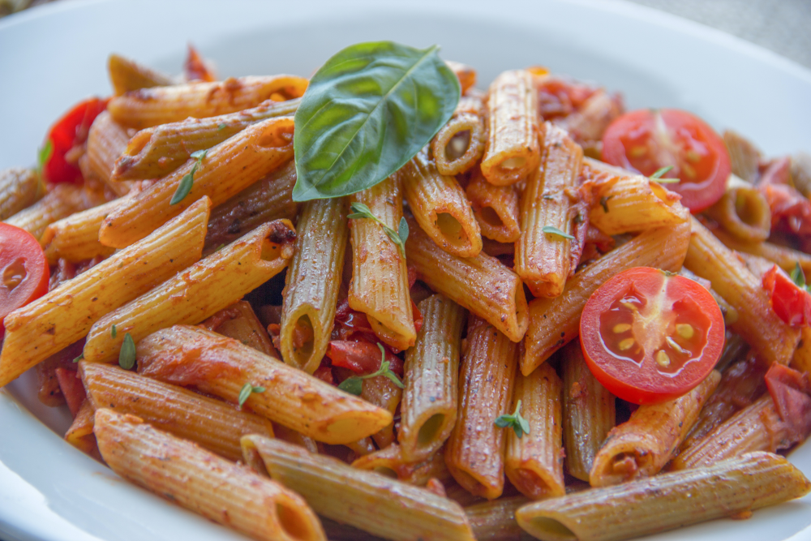
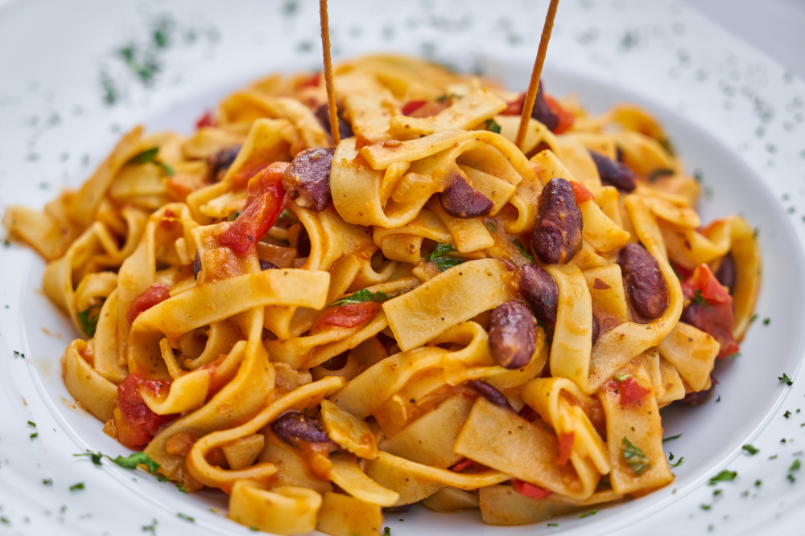
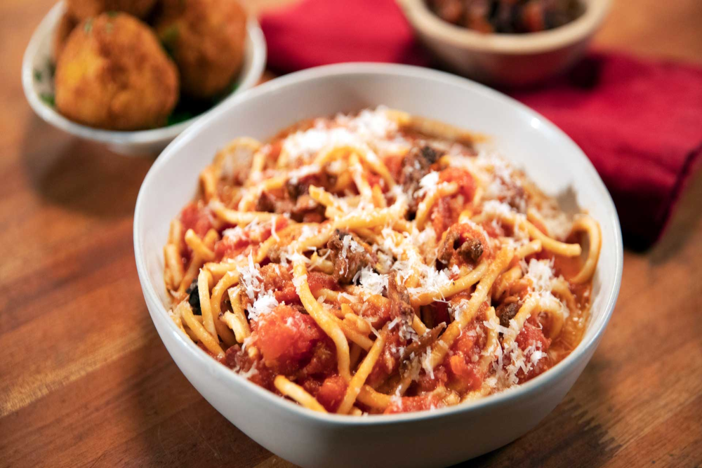
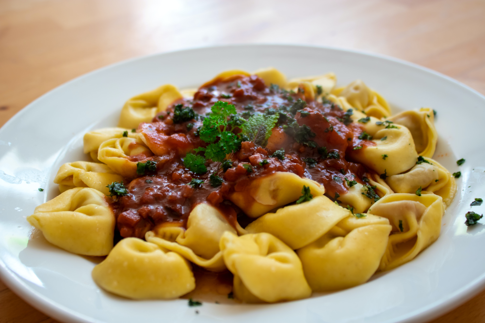
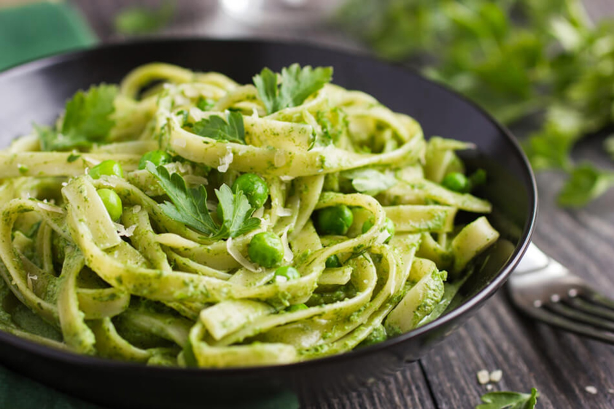
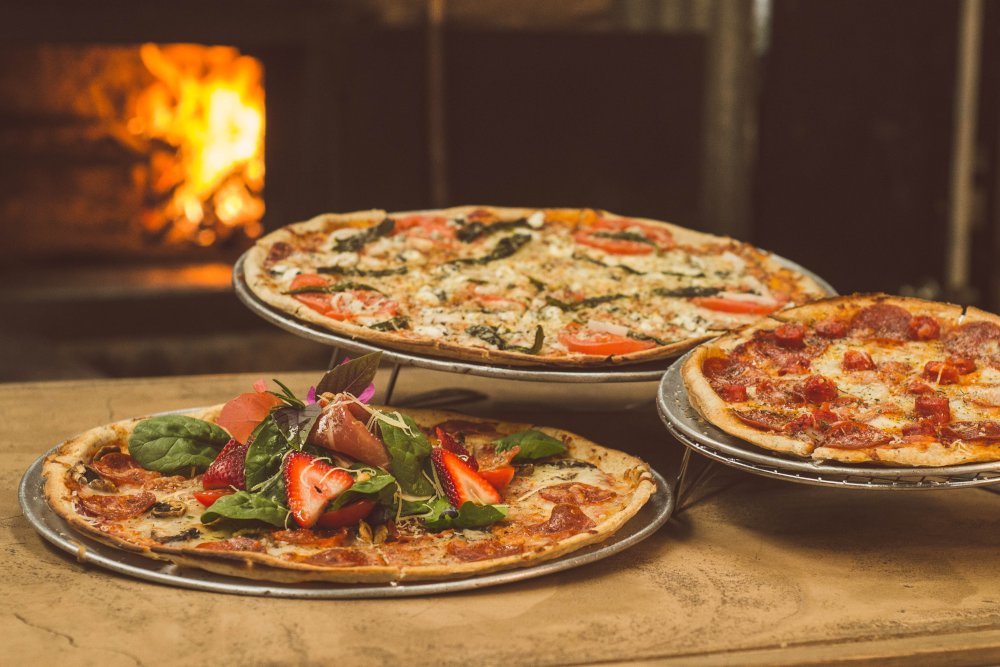

Trattoria & Pizzaria
Massas Napolitanas no clássico estilo italiano
Considerada um Patrimônio Cultural Imaterial da Humanidade pela Unesco, esse tipo de massa é amassada à mão, contendo sabor e textura únicos acompanhados é claro de ingredientes importados diretamente da Itália
Massas fit
Você também pode saborear nossas massas e pizzas disponíveis mediante pedido com massa integral, com baixa caloria e sem glúten
Pratos tradicionais
Penne ao famoso Molho Pomodoro com agrião e muçarela
Este molho italiano é muito usual nos meses de Primavera e Verão, por ser mais leve.
Fettuccine com ragu de linguiça calabresa e champignons frescos laminados
É um tipo de massa popular na culinária Italiana. De fabricação artesanal, é um macarrão achatado feito de farinha e ovos, mais largo ou similar ao tagliatelle típico de Bologna.
Bucattini à matriciana
Do italiano Sugo all'amatriciana, esta receita clássica italiana é fabricada artesanalmente com um molho italiano à base de tomates italianos frescos, pancetta e queijo pecorino, usado para condimentar as massas. Seu nome deriva da pequena cidade de Amatrice, situada na região do Lácio.
Tortellini de bolonha com o clássico molho à bolonhesa
Alguns estudiosos, levando em conta a etimologia da palavra, sustentam que o tortellini existe desde o século 12. O nome viria de "turtellus" (alimento difundido nos antigos monastérios e servidos nas antigas tavernas) que por sua vez derivaria de "tortula", pão rústico salgado e recheado, conhecido desde os primeiros tempos do cristianismo.
Talharim ao molho Pesto
Considerado um dos mais saborosos molhos italianos, o pesto é uma receita autêntiica e típica de Gênova na itália<. Combinado com manjericão, pinoli, alho, queijo pecorino ralado e é temperado com pimenta preta e sal.
Pizzas
Um cardápio de pizzas requintado com uma diversidade de sabores épicos, cuidadosamente selecionados pelo nosso Chef.
- Margherita
- Marinara
- Prosciutto e funghi
- Quattro stagioni
- Capricciosa
- Quattro formaggi
- Ortolana/Vegetariana
- Diavola
- Boscaiola